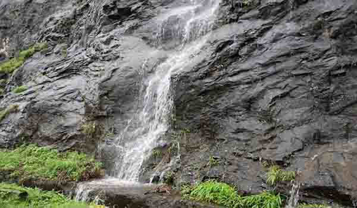

Offering a contrast of blue and green, Kune Falls are located on the old Mumbai- Pune highway; right between Lonavala and Khandala. Kune Waterfall is full of nature’s tranquility and beauty. This three-tiered waterfall has a total height of 200 metres, and the longest drop is roughly 100 metres high. Kune Waterfall is among the highest waterfalls in Lonavala and the 14th highest in India.
The pool formed by this waterfall is an ideal spot for swimming and bathing. Rappelling and zip lining is quite prominent too. The lush green foliage surrounding the waterfall makes it an eye-pleasing sight, and is ideal for a picnic spot where one can spend a couple of hours relaxing with family.
Height:
656 Feet
Location:
Khandala, Lonavala
How to reach:
You can reach Kune Church by taking Mumbai – Pune Highway, and take a short walk to the waterfall.